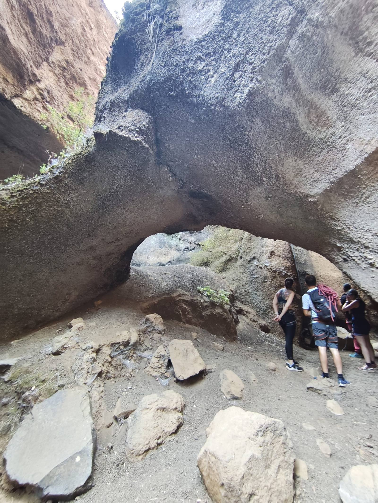
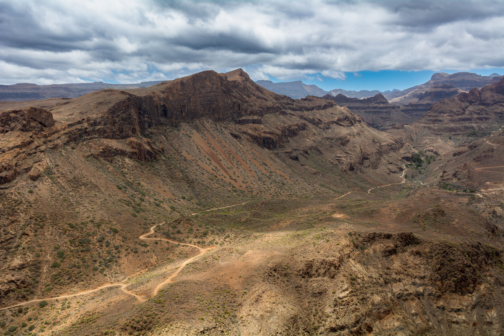

Hacer de Canarias
tu próxima aventura
Somos una plataforma creada por aventureros para aventureros. Nuestro único fin: que encuentres, planifiques y vivas la mejor aventura outdoor en las Islas Canarias.
Por qué existe esta web
Canarias tiene miles de rutas, decenas de empresas de aventura y experiencias increíbles repartidas por nueve islas. El problema es que la información está fragmentada, desactualizada o directamente no existe en internet.
Creamos Aventuras en Cada Paso porque estábamos hartos de buscar rutas en webs llenas de publicidad, con datos incorrectos de 2015 y sin coordenadas GPS reales. Queríamos una plataforma honesta, actualizada y diseñada por gente que realmente sale al monte.
Todo lo que ves aquí ha sido recopilado de fuentes oficiales, guías locales y plataformas especializadas. Las coordenadas son reales. Los tiempos son honestos. Las dificultades no están maquilladas para vender más tours.

Lo que queremos conseguir
Información real
236 rutas con coordenadas GPS de fuentes oficiales, distancias reales, dificultades honestas y enlace al track GPX. Sin datos inventados.
Empresas locales
Conectamos a los aventureros con las mejores empresas locales de guías, alquiler y actividades. Economía local, experiencias auténticas.
Las 9 islas
Tenerife, Gran Canaria, Lanzarote, Fuerteventura, La Palma, La Gomera, El Hierro, La Graciosa e Isla de Lobos. Todas cubiertas, todas con mimo.
Siempre gratis
Esta web no tiene publicidad, no vende datos y no cobra por acceder a las rutas. Es gratis ahora y será gratis siempre. Sin trucos.
Turismo responsable
Promovemos el respeto por la naturaleza, los senderos señalizados y los permisos cuando son necesarios. Canarias es patrimonio de todos.
Comunidad real
Fotógrafos, trail runners, escaladores, kayakistas y senderistas que comparten lo que saben. Una comunidad que suma, no que compite.
Creemos que CANARIAS merece ser explorada,
no solo visitada.
- Creemos que el mejor hotel de Canarias es un vivac bajo las estrellas en la naturaleza.
- Creemos que la mejor piscina de Canarias es una caleta de arena negra inaccesible por carretera.
- Creemos que la mejor vista de Canarias no está en ninguna terraza de hotel, sino desde la cima de una montaña que te has ganado a pulso.
- Creemos que los que llegan a un sitio difícil no son mejores que nadie, pero sí tienen algo que no se puede comprar.
- Creemos que Canarias tiene suficiente para toda una vida de aventuras. Y esta web existe para demostrarlo.
Quién hay detrás
El Senderista
Rutas y contenido
Ha recorrido más de 500 km de senderos en Canarias. Conoce los atajos, los miradores secretos y qué llevar en la mochila para cada ruta.
La Fotógrafa
Imagen y redes sociales
Madruga más que nadie para capturar el amanecer en el Teide. Sus fotos son la prueba de que Canarias no necesita filtros.
El Marinero
Deportes acuáticos
Kayakista, buceador y surfista. Conoce los mejores spots acuáticos de todas las islas y las condiciones del Atlántico en cada época del año.
La Exploradora
Nuevas rutas e islas
Especialista en La Graciosa, Isla de Lobos y El Hierro. Encuentra rutas donde nadie más mira y las documenta con detalle milimétrico.
Lo que nos mueve cada día
Hay algo que pasa cuando llegas a un sitio que te ha costado sudor y esfuerzo. No es solo el paisaje, que suele ser impresionante. Es algo más difícil de explicar: la sensación de que ese momento es completamente tuyo porque te lo has ganado.
En Canarias eso ocurre constantemente. En la cima del Teide a las 6 de la mañana, cuando el mar de nubes está por debajo de ti y el sol sale por el este. En el fondo del Barranco de Güigüi, después de 4 horas de bajada, cuando llegas a una playa donde no hay nadie más. En la Caldera de Taburiente, cruzando el arroyo Almendros por décima vez.
Eso es lo que intentamos hacer con esta web: que más gente viva esos momentos. No los momentos de las guías turísticas, sino los de verdad. Los que te cambian un poco.

Canarias en números
Altura del Teide, la montaña más alta de España
Superficie de Tenerife, la isla más grande
Islas habitadas, cada una completamente diferente
Temperatura media del agua del Atlántico todo el año
Parques Nacionales en un solo archipiélago
Años de antigüedad de la laurisilva de La Gomera
Visibilidad submarina en la Reserva Marina de El Hierro
Días de sol al año de media en el sur de las islas
Cómo sacarle todo el partido
Elige tu isla
¿No sabes cuál es la mejor isla para lo que buscas? Usa el comparador de islas — te hace 4 preguntas y te dice cuál encaja mejor con tus planes, nivel y época del año.
Busca tu ruta
El buscador de aventuras tiene 236 rutas con mapa interactivo. Filtra por isla, tipo de actividad, dificultad y duración hasta encontrar la perfecta para ti.
Descarga el track
Cada ruta enlaza a Wikiloc o AllTrails donde puedes descargar el GPX. Cárgalo en tu móvil o GPS Garmin antes de salir. Sin cobertura en muchos barrancos.
Equípate bien
En Equipamiento y Tiendas encontrarás las mejores tiendas de alquiler, compra y reparación de material outdoor en cada isla. Con mapa para llegar fácil.
Lee antes de salir
El blog tiene guías detalladas: qué llevar en la mochila, cómo conseguir los permisos del Teide, cuál es la mejor época para cada isla y mucho más.
Comparte tu aventura
Si eres fotógrafo, creador de contenido o guía local, colabora con nosotros. Tu experiencia ayuda a otros aventureros a vivir mejor Canarias.
Lo que nos preguntan
Sí. Cada ruta ha sido recopilada de fuentes oficiales, guías especializados y plataformas de referencia. Las coordenadas GPS son reales, los tiempos son honestos (no los tiempos optimistas de las guías turísticas) y las dificultades no están maquilladas. Si detectas un error, escríbenos y lo corregimos.
No. Todo el contenido es libre y gratuito sin registro. El buscador, el mapa, los tracks y las guías son accesibles para todo el mundo sin crear cuenta. Así seguirá siendo.
Escríbenos a aventurasencadapaso@gmail.com o por Instagram. Si nos mandas las coordenadas GPS, la distancia y la dificultad, la revisamos y la añadimos. Todas las rutas que publicamos pasan por un proceso de verificación.
Depende de la ruta y de tu nivel. Las rutas fáciles son muy seguras y aptas para familias. Las rutas difíciles y extremas requieren experiencia, equipo adecuado y preparación. Nunca salgas sin agua suficiente, sin el track descargado offline y sin decirle a alguien dónde vas. El sol en Canarias es muy intenso y los barrancos no tienen señal.
Sí. Buscamos fotógrafos, guías locales, trail runners y creadores de contenido que conozcan Canarias de verdad. También empresas de aventura que quieran aparecer en la web. Más información aquí.
Depende de lo que busques. Para senderismo extremo: La Palma. Para variedad total: Tenerife o Gran Canaria. Para laurisilva y bosque: La Gomera. Para buceo: El Hierro. Para tranquilidad absoluta: La Graciosa. Usa el comparador de islas para una respuesta personalizada.
Ahora es tu turno de
vivir la aventura
236 rutas te esperan. 9 islas por explorar. Un océano que no se parece a ningún otro.
Todo gratis, todo verificado, todo tuyo.